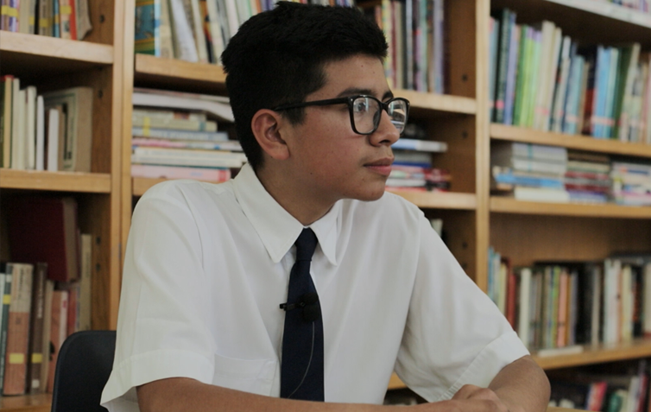

Para el desarrollo de su propósito, Fundación Becar ® despliega (becas y programas) los siguientes objetivos como misión general:
1.
Desarrollar programas de ayuda con distintas instituciones que otorguen becas y programas a niños y jóvenes para dar acceso y oportunidades para una educación integral de calidad.
2.
Realizar alianzas con otras instituciones para el despliegue de proyectos de innovación educativa y bienestar social que permitan el beneficio a la población atendida por nuestra Fundación.
3.
Generar proyectos y programas alineados al modelo educativo integral de FB: innovación educativa, tecnología exponencial, nuevas corrientes pedagógicas de aprendizaje y desarrollo de todas las capacidades de formación humana que permitan el beneficio de las comunidades educativas de las instituciones afiliadas.
Elevar la calidad educativa en México a través del apoyo a colegios en desventaja mediante la promoción del Modelo Educativo Integral de Fundación Becar ®.
“Son la esencia de la Fundación y de las personas que colaboramos en ella.”
Gran estado de ánimo para servir y ayudar a los demás.
Trabajar día con día por el bienestar de los demás.
Impulso de ser mejores día a día.
Comprometidos en la construcción de una sociedad verdaderamente humana.
Acción honesta en nuestro proceder.
para el mundo y para México
Todos somos conscientes de la importancia de la educación y de los centros escolares en la formación de las personas que conforman y conformarán la sociedad de esta denominada 4ª revolución industrial. En Fundación Becar hemos querido ir más allá, y planteamos realidades sociales, económicas o culturales, que nos permiten visualizar una nueva realidad social: la 5ª revolución industrial, entendida como el despliegue de las habilidades de la persona frente al predominio de la automatización y la tecnología.
Una nueva época marcada por una presencia de la tecnología en todas las dimensiones más críticas de la sociedad: el mundo laboral, el mundo relacional y el mundo de la persona, y en la que el ser humano deberá tener claros muchos parámetros que le permitan aportar valor y seguir siendo el protagonista del devenir de la sociedad.
Un escenario social que, alineado a los Objetivos de Desarrollo Sostenible de la Agenda 2030 de Naciones Unidas, principalmente el objetivo 4 de Educación de calidad, nos da la certeza de que tenemos el margen suficiente para poder desplegar nuestra visión institucional y los proyectos y programas que la consolidan dando sentido a Fundación Becar.
Fundación Becar propone un Modelo Educativo Integral para todos los colegios afiliados y centros escolares que necesiten fortalecer su Proyecto Educativo. Dicho modelo garantizará que las y los alumnos puedan recibir una educación de calidad que consiga aminorar e incluso desaparecer la realidad social de la que provienen, posibilitando incorporarse con mayores oportunidades a estudios superiores o laborales.
Para asumir este compromiso y realmente ser una Fundación con vinculación a los escenarios sociales futuros, nuestro modelo da una importancia relevante a los Objetivos de Desarrollo Sostenible (ODS) que la Organización de las Naciones Unidas (ONU) ha establecido para el año 2030. La Fundación se centra principalmente el ODS 4 que tiene como fin “garantizar una educación inclusiva y equitativa de calidad y promover oportunidades de aprendizaje permanente para todos”, aspecto vinculado dir ectamente al propósito y objetivo fundacional de Becar, pero también prioriza otros 6, que de manera indirecta, también forman parte de nuestra actividad fundacional.
Fundación Becar